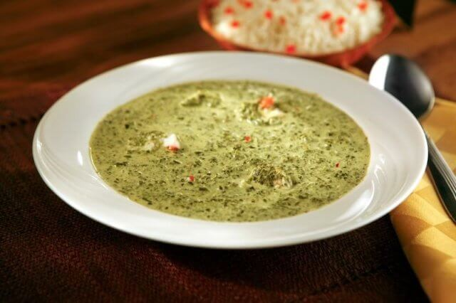
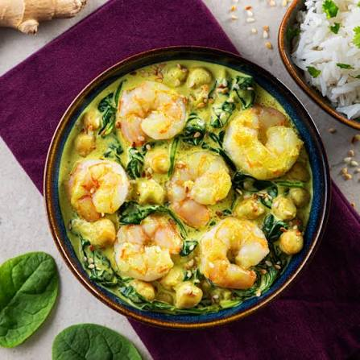
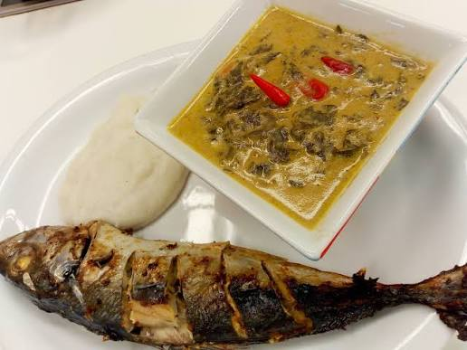
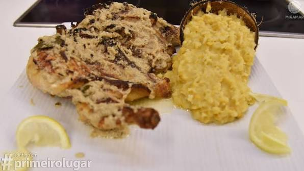
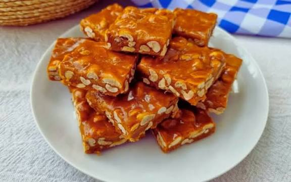
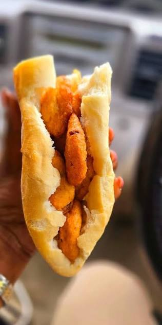

Nosso Menu
Menu - Gastronomia Moçambicana

Matapa Tradicional
Matapa de Folhas de Mandioca, Leite de Coco e Amendoim Polvilhada Com Camarão Seco
Preço: 250 MT

Caril de Camarão
Camarão frito em oleo de oliva e cozido ao molho de coco
Preço: 300 MT

Xima com Peixe
peixe frito acompanhado de xima, molho de tomate e pei-piri
Preço: 150 MT

Frango à Zambeziana
Frango Assado em fogo baixo de lenha de goiabeira, previamente temperado com alho, molho de coco e especiarias locais
Preço: 480 MT

Doce de amendoim
Doce de Cana de acucar e amendoim releinxadoaos bocados
Preço: 50 MT

Pão com Badjia
Pão de padaria acompanhado de pastel de ervilha e pei-piri
Preço: 20 MT